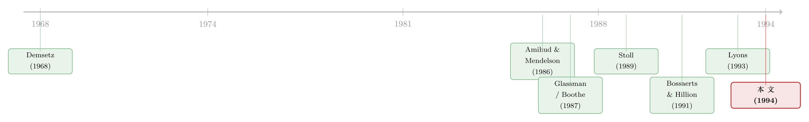

全世界最贵的「免提」：当外汇做市商也要为库存付钱
本文读的是 Bessembinder (1994, Journal of Financial Economics)：在没有最小报价单位、没有集中交易所、24 小时不打烊的批发外汇市场里，买卖价差 (bid-ask spread) 依旧会随库存持有成本（价格风险与流动性成本）的代理变量而扩大；周末与节假日前的价差上升，几乎可以完全归因于这段「停盘期」里价差对风险和流动性成本敏感度的上升。作者还提出了一种简单办法，用来度量做市商把报价相对「价值」放在哪个位置——这正是检验「库存控制」理论的钥匙。
1 引言：一个不该出现的现象
先讲一个让人犯嘀咕的事实。
在纽约证券交易所，一只一美元以上的股票，最小报价单位是八分之一美元。也就是说，价差天然只能落在「几个格子」上——它聚成几堆，是被规则逼出来的。这一点没什么好奇怪的。
可外汇市场不一样。它是这个星球上最活跃的市场——论文引用的数字是，外汇日均成交约 $650 billion，而 NYSE 史上成交最大的那一天（1987 年 10 月 19 日）也不过 $21 billion。它没有集中的交易所，没有指定的开盘收盘，除了周末和银行假日，全天候连轴转。最要紧的是：它没有最小报价单位。做市商想把价格报到多细就报到多细。
按理说，一个价格完全内生、不受任何刻度约束的市场，价差应该是连续、弥散、五花八门的。
然而 Bessembinder 翻开数据一看，偏偏不是。
在「惯例报价」下（英镑用美式、马克/日元/瑞郎用欧式），观测到的价差有 53% 恰好取 10（四种货币平均），另有 23% 取 5、15 或 20。一个不受约束的市场，价格却像被无形的手按在了几个数上。
于是一个自然的问题冒出来：既然不是规则逼的，那是什么把这些「自由价格」摁住了？更进一步——在这样一个被认为「逆向选择风险极小」（货币定价主要靠宏观信息，而非公司内幕，做市商被「更聪明的人」割韭菜的概率很低）的市场里，价差到底在为什么东西买单？
这就是全文要反复钻的那一个核心：库存（inventory）。
2 把价差拆开：三笔账，独缺哪一笔？
要理解作者在追什么，得先回到微观结构理论给买卖价差开的那张「成本清单」。
Demsetz (1968) 把价差定义为购买「即时性 (immediacy)」——不必等待就能成交的权利——所要付的代价。后来 Stoll (1989) 做了一次综合：提供即时性的人，要覆盖三类成本：
- 指令处理成本 (order-processing costs)：开门做生意的固定开销；
- 逆向选择成本 (asymmetric-information costs)：怕和知情者做对手盘；
- 库存持有成本 (inventory carrying costs)：手里攥着头寸，要承担价值波动的风险，还要垫上机会成本。
股票市场的微观结构研究，多半在前两笔账上打转，尤其是逆向选择。可外汇市场恰恰是一面照妖镜：它的逆向选择被普遍认为很弱——货币靠宏观信息定价，没有「某家公司要暴雷」这种私密消息。那么，如果在外汇市场里价差依然系统性地波动，这笔账多半就要记在第三项头上。
这就是 Bessembinder 的下注：在一个把逆向选择基本「关掉」的市场里，单独把库存成本拎出来检验。这是个聪明的实验设计——你想看清一种力量，最好的办法是找一个其他力量都很弱的场景。
接着，一个绕不开的麻烦来了：外汇做市商的「库存」到底是什么？
3 麻烦的「库存」：哪种货币才算存货？
在股票市场，事情很干净：专家 (specialist) 的净股票头寸是库存，货币是计价单位 (numeraire)。可在外汇市场，两边都是货币。哪种货币算库存？哪种（如果有的话）算计价单位？这是一个悬而未决的问题。
而且，做市商本身就是大型商业银行，它们做贷款、做欧洲货币市场拆借、做衍生品，这些业务本来就要持有外币头寸。换句话说，银行手里那一堆货币，并不都是为了「做市」而存的——把「做市库存」从「经营头寸」里剥出来，本身就难。
作者给了一个很务实的切入点：流动性。做市银行承诺在两个营业日后交割任意一种货币，因此区分「做市库存」的，是它的流动性程度——银行用维持在各国「往来账户 (nostro accounts)」里的高流动性头寸来交割。持有这种高流动性存货是有代价的：
- 机会成本：高流动性存款的利率，低于流动性差一些的存款；
- 价值风险：存货本身会随汇率波动而升值贬值；
- 替代方案也不便宜：不囤货，就得在客户买卖失衡时去公开市场补缺口——可那意味着你要按别人的 ask 买、按别人的 bid 卖，反过来自己付了一遍价差。
把这三条顺下来，就能推出一个可检验的预言：越临近周末，库存成本越高。理由有三——存货要多压几天（机会成本上升）、跨周末的价值风险更大、而周末市场更不流动。于是周五的价差应该更宽。这一条，后面会成为全文最漂亮的一击。
（关于「外汇做市商到底怎样管理库存」这个问题，有一篇结论几乎相反、同样精彩的研究，可参见《全世界最大的市场，做市商却从不靠「改价」管库存》；而做市商在「无风险」市场里为何仍会因风险限额而调整报价，可参见《无风险市场里的风险厌恶》。）
4 数据与设计
数据是一组每日的即期与六个月远期报价，取自伦敦收盘时点，区间从 1979 年 1 月到 1992 年 12 月，样本量 N = 3544。四对货币——英镑、瑞士法郎、德国马克、日元，均兑美元——由 Data Resources, Inc. (DRI) 提供，原始来源是 Reuters，由一家「有代表性」但不具名的银行就大额交易报出。DRI 把数据统一转成了「美式报价 (American terms)」。
度量库存成本，作者用了三个代理变量：
- 价格风险预测。利用「波动率会扎堆」这一众所周知的规律来预报明天的风险。具体做法：用一个 GARCH(1,1) 模型估计条件波动率，并在方差方程里额外放入假日与周末的指示变量；实证里用的「风险预测变量」，就是这个条件方差向前推一天 (led by one day) 的值。这背后的直觉很朴素——做市商定 bid/ask，靠的是他对未来一段时间波动的判断，而不是已经发生的波动。
这里值得把 GARCH(1,1) 的形状摆出来——它说的是，今天的条件方差，由一个常数、昨天的「意外」平方、以及昨天的条件方差三块拼成：
$$ \sigma_t^2 = \omega + \alpha\, \varepsilon_{t-1}^2 + \beta\, \sigma_{t-1}^2 $$
波动率因此有了「记忆」：一次大冲击会顺着 \(\beta\) 一天天衰减地传下去。Baillie and Bollerslev (1989) 早就报告过，每日即期汇率的条件异方差用 GARCH(1,1) 刻画得相当好——作者正是站在这块地基上，把「明天的风险」做成了一个可观测的回归自变量。
-
流动性成本。用伦敦收盘的欧洲美元 (Eurodollar) 利率来构造。第一个度量是「一个月欧洲美元利率 − 隔夜欧洲美元利率」。作者很坦诚：这个差里其实混了两块——一块是持有隔夜头寸固有的更高流动性成本，另一块是「跨期因素」（比如对未来隔夜利率变化的预期）。若后者为零，这个度量就精确；既然不为零，它就是带误差地测了真实流动性成本。于是他又给了第二个约束更弱的度量：不要求跨期因素为零，只要求它在不同短期限上相等——用「观测日之后第二个月的隐含远期利率 − 当日一个月利率」来估计那块跨期成分，再扣掉。
-
非交易指示 (nontrading indicator)：标记周末、假日这类停盘区间。
此外，为了把库存效应和「交易量」效应分开，作者还放入了预期与非预期交易活动的度量——一个埋了伏笔的设计，下文会说到它的含义。
5 主要结果：三记落点
5.1 外汇价差有多小
先给个量级感。Panel B 显示，即期百分比价差很小：均值从德国马克的 0.052% 到瑞士法郎的 0.080%；远期价差更大些，但仍小，从马克的 0.087% 到瑞郎的 0.146%。
小到什么程度？作为对照，Stoll (1989) 报告场外股票的价差从最大十分位公司的 1.2% 到最小十分位的 6.9%；Amihud and Mendelson (1986) 报告 NYSE 股票组合的价差在 0.5% 到 3.2% 之间。外汇价差比个股窄一两个数量级，原因不难想：成交量巨大带来的规模经济、更小的收益方差、以及更低的「被知情者割」的概率——又一次指向逆向选择在这里很弱。
但「小」不等于「不动」。论文报告，即期价差的变异系数 (coefficient of variation) 在大约 0.50 到 0.75 之间——尽管报价高度聚集在几个数上，价差本身的波动性一点都不小。这正是后面回归能跑出东西的前提。
5.2 周末与假日：那记最漂亮的落点
与 Glassman (1987) 一致，本样本里周五的百分比价差显著高于其他日子。而且，用「惯例报价」算的绝对价差（Panel C）在周五也显著更高——这说明周五的上升来自报价价差本身的扩大，而不是汇率自己在动。
更妙的是假日。各金融中心的假日并不总是重合，于是作者把假日拆开看：只在伦敦、只在纽约、只在东京放假的「单中心假日」，价差没有显著上升；可一旦是伦敦+纽约同时放假，价差比平日上升 超过 50%（四币种平均）；而三地同时放假（样本里只有元旦这一种），价差翻了一倍多。
这串证据互相咬合得很紧：多个金融中心同时停盘 → 流动性显著恶化 → 库存成本飙升 → 价差暴涨；单一中心放假不伤大局 → 价差不动。库存成本理论被狠狠地确认了一次。
留一个悬念：作者自己也承认困惑——为什么假日前的价差上升，明显比周末前还要大？这个「过度」的部分，他没能完全讲清，是论文留下的一个小尾巴。
5.3 时间序列回归：周末效应其实是「敏感度」的故事
把价差对三个库存成本代理（风险预测、流动性成本、非交易指示）以及交易量代理做时间序列回归后，作者报告：价差确实随风险预测上升、随流动性成本度量上升、并在周末与假日这些停盘区间前上升。
但真正关键的一步在于一个更细的发现：周末和假日前价差的上升，可以被「停盘期里价差对风险和流动性成本的敏感度上升」完全解释。换句话说，停盘不是凭空给价差加了一个常数项的「周末溢价」，而是放大了价差对风险、对流动性成本的反应——库存要多扛几天，每一单位风险、每一单位流动性成本，就更值得用更宽的价差去补偿。这是把「周末效应」从一个现象，还原成了一个机制。
于是反转出现：那个被很多人当作「日历异象」来记的周五价差扩大，在这里被重新解读为库存成本理论的一个推论，而非一个需要单独解释的怪事。
而那个埋下的伏笔——预期与非预期交易量——也开花了：作者的分析支持「交易量的预期成分与非预期成分对价差有异质影响」的结论。简单说，市场早就预料到的成交活跃，和突如其来的成交活跃，对价差的作用并不一样。这与把「成交量」笼统塞进一个系数的做法形成了对照。
6 第三件武器：报价被放在「价值」的哪一侧
到这里，文章已经把库存与价差的关系讲透了。但 Bessembinder 还往前走了一步，这一步是他自认的第三项贡献，也是方法上最有意思的地方。
做市商不只能靠「拉宽价差」来管理风险，还能靠整体平移报价来主动改变库存——想减少某种货币的头寸，就把它的 bid 和 ask 一起相对「价值」往下挪，鼓励别人来买、劝退别人来卖。于是，报价相对价值的位置，本身就携带了库存控制的信息。
作者提出了一个简单程序来度量这个「位置」，并发现：样本里的做市商，在美元计价利率上升时、在临近周末时，会把外币报价相对价值压低。这与「在这些时点上想把外币头寸换成美元头寸」的动机完全吻合——利率高时美元更值得持有，周末前外币库存更烫手。
这件武器还有一个副作用，作者特意点了出来：关于「货币价值是否变化」的假设检验，其结果可能对「是否允许报价位置随时间变动」很敏感。也就是说，如果你天真地把 bid/ask 中点当成「价值」去做事件研究，而忽略了做市商在系统性地平移报价，你可能会把一个「库存控制导致的报价移动」误读成「价值变化」。这是给后来所有用外汇中点价做研究的人提的一个醒。
7 文献脉络
把这条线捋一捋。
最早的源头是 Demsetz (1968)，他把价差讲成「即时性的价格」，奠定了「价差要覆盖提供流动性之成本」的整个框架。随后，价差与资产定价被 Amihud and Mendelson (1986) 正式接上——流动性是要被定价的。Stoll (1989) 则把价差的三块成本（处理、信息、库存）做了理论与实证的综合，并给出了股票市场的价差基准。

外汇这一支稍晚。Glassman (1987) 与 Boothe (1987) 发现外汇价差随近期波动率、随成交量、并在周五扩大——这些是 Bessembinder 直接站上去的肩膀，但它们更多是「现象」层面的相关。Goodhart and Demos (1990) 描述了 Reuters 屏幕上的报价活动，告诉我们这个市场长什么样；Bossaerts and Hillion (1991) 则关注政府干预对外汇微观结构的影响，也记录了周五效应。
与此同时，股票微观结构里有一个不太顺利的旁支：Hasbrouck (1991) 与 Jang and Venkatesh (1991) 发现库存控制理论解释不了 NYSE 的报价行为，而他们都把矛头指向了最小报价单位这个讨厌的离散约束。
Bessembinder (1994) 恰好坐在这两条线的交汇处：他借外汇市场「无最小报价单位、逆向选择极弱」的天然条件，把库存成本单独拎出来检验，既补上了外汇文献从「现象」到「机制」的一跳，又绕开了困住股票研究的那道离散墙。几乎同期，Lyons (1993) 用日内交易数据深入外汇做市商行为，与本文形成互补——一个用日度报价看库存成本的「价」，一个用日内成交看库存管理的「量」（可参见《just another day in the inter-bank foreign exchange market》与《tests of microstructural hypotheses in the foreign exchange》）。
8 评论与延伸（Q&A + 研究方向）
(a) 几个可能的疑问
Q：逆向选择真的可以忽略吗？外汇市场难道没有知情交易？
作者的论证是「相对」意义上的：货币靠宏观信息定价，缺少股票那种公司层面的私密信息，因此做市商被知情者割韭菜的概率较低。但这不等于零——央行干预、宏观数据发布前后都可能有信息不对称。本文的策略不是证明逆向选择为零，而是挑一个它足够弱的场景，让库存效应不被它淹没。把逆向选择完全归零，是这篇文章一个需要读者自行打折的前提。
Q：报价聚集在 10 这种现象，到底解释清楚了吗？
没有。作者把它清楚地记录了下来——惯例报价下 53% 取 10，且这种聚集在「非惯例报价」（把每个报价取倒数后）下大幅减弱，说明它和报价惯例、汇率水平有关——但「为什么不受约束的价格会内生地聚集」这个问题，他明说留作公开问题，并引 Harris (1991) 指出股票价格也会超出最小刻度地聚集在整数/四分之一上。这是现象层面的发现，不是机制层面的解释。
Q：用「每日、伦敦收盘、单一代表性银行」的报价，会不会太粗？
会有局限。这是指示性 (indicative) 报价而非成交价，且作者自己提醒：代表性银行的 bid/ask 未必是全市场最优，一些私下成交还发生在指示报价之内——因此这些价差可能高估了真实的批发交易成本。它适合做日度的时间序列分析，但要研究日内库存动态，就得换 Lyons 那类成交级数据。
Q：周末价差上升，凭什么说是库存而不是别的？
关键证据有两层。第一，用绝对价差看，周五上升来自报价价差本身扩大，而非汇率波动——排除了「是汇率在动」。第二，多中心同时放假价差翻倍、单中心放假价差不动——这种「按流动性恶化程度排序」的剂量反应，很难用库存以外的故事讲圆。再加上回归里「周末效应=敏感度上升」的分解，三条证据指向同一个机制。
Q：这篇和「成交成本」研究是一回事吗？
不完全是。本文量的是报价价差（quoted spread）的时间序列决定因素，落点在库存成本；而很多成交成本研究关心的是有效价差、价格冲击、议价能力等（可参见《做市商的「无风险」生意：把成交成本拆成成本与议价能力》）。本文更靠近「做市商为什么这样报价」，而非「客户最终付了多少」。
Q：结果能外推到今天的电子化外汇市场吗？
要小心。样本是 1979–1992，作者明确指出 Reuters 2000 Dealing 这类电子撮合系统在样本期内尚未启用。电子化、做市商竞争加剧之后，库存与价差的关系是否还这么强，是一个开放问题（相关的当代证据可参见《FX spreads and dealer competition across the 24-hour》）。
(b) 几个可能的研究问题与提案
1. 把「报价位置」这把尺子搬进公司债市场。
【经济故事】本文最原创的工具，是用报价相对价值的平移来反推做市商的库存控制动机。公司债是典型的交易商市场、库存沉重、且近年有 TRACE 这样的成交数据——做市商在临近季末、临近风险限额时，是否也在系统性地平移报价以卸货？这能把「库存控制」从外汇搬到信用市场。
【可行性】中。TRACE 成交数据加交易商身份（受限版）可得，识别上可借用季末、监管资本节点作为「库存压力」的外生冲击；难点在于公司债没有连续的「价值」基准，需要用矩阵定价或同发行人可比券来构造，测量误差是主要威胁。
2. 外资持有人结构与外汇库存成本。
【经济故事】本文把库存成本压在「流动性」和「跨周末风险」上。一个自然延伸：当某种货币的境外持有更集中、或更多由必须定期变现的外国机构持有时，做市商承担的库存风险与不对称需求是否更大，价差是否更宽？这把宏观的「外资持有人」和微观的「价差」接了起来。
【可行性】中偏低。需要 IMF/TIC 的跨境持仓数据与高频外汇价差对齐，频率不匹配是硬伤；可考虑用债券基金的赎回潮作为「被迫变现」的外生事件，但识别链条较长。
3. 用 GARCH 风险预测重做一遍：是「已实现」还是「预期」波动定价了价差？
【经济故事】本文的一个细节常被忽略——它用的是条件方差向前一天的预测值，而非已实现波动。如今有了高频已实现波动率 (realized volatility) 和期权隐含波动率，可以正面比一比：做市商的价差到底跟着哪一种「波动」走？这能检验「做市商是前瞻定价」这一行为假设。
【可行性】高。日内外汇数据、期权隐含波动率都已普及，三种波动度量横向回归即可，识别压力小，是一个干净、可立即上手的复制+扩展。
4. 把「预期 vs 非预期成交量」的异质效应做精。
【经济故事】作者报告了预期与非预期交易量对价差有不同影响，但限于日度数据，分解较粗。用日内订单流可以把「可预测的流量」和「意外的失衡」干净地分开，检验究竟是哪一种推宽了价差——这直接关系到库存模型与信息模型的区分。
【可行性】中。需要带方向的日内成交/订单流数据（如 EBS、Refinitiv），数据获取是主要门槛，方法上成熟。
9 参考文献与我的判断
贡献。 这篇文章的价值，不在于发现了「价差会随波动率和周末扩大」——这一点 Glassman、Boothe 已经报告过。它真正的贡献有两层：一是识别设计——借外汇市场「无最小刻度、逆向选择弱」的天然实验，把库存成本从三笔账里干净地分离出来，并用 GARCH 预测、欧洲美元利差这些前瞻性代理把它做成可回归的自变量；二是那把度量报价位置的尺子——它把「做市商如何主动平移报价以控制库存」变成可观测的对象，并顺手提醒了所有用外汇中点价做事件研究的人：报价位置会动，别把库存控制当成价值变化。
对识别的担忧。 三点。其一，逆向选择「可忽略」是一个假设而非结论，若样本里夹着央行干预或宏观数据发布的知情交易，库存系数会被污染。其二，数据是单一代表性银行的指示性日度报价，既非成交价、也非全市场最优，价差水平很可能被高估，且无法看清日内库存动态。其三，1979–1992 的样本早于电子撮合时代，外推到今天需要谨慎。
后续想看到什么。 我最想看的，是把那把「报价位置」尺子用更高频的数据重做一遍，并搬到公司债与信用市场去——在一个库存更沉、做市商更受资本约束的市场里，「平移报价以卸货」的指纹应该更清晰。其次，是把「预期/非预期成交量」的异质效应用订单流做精，正面回答库存与信息这两种力量在价差里各占多少。这篇 1994 年的文章，留下的不只是一个结论，更是一套还能继续用下去的方法。
参考文献
Amihud, Yakov and Haim Mendelson (1986). Asset pricing and the bid-ask spread. Journal of Financial Economics 17, 223–249.
Baillie, Richard and Tim Bollerslev (1989). The message in daily exchange rates: A conditional variance tale. Journal of Business and Economic Statistics 7, 297–305.
Bessembinder, Hendrik (1994). Bid-ask spreads in the interbank foreign exchange markets. Journal of Financial Economics 35, 317–348.
Boothe, Paul (1987). Exchange rate risk and the bid-ask spread: A seven country comparison. Economic Inquiry 25, 485–492.
Bossaerts, Peter and Pierre Hillion (1991). Market microstructure effects of government intervention in the foreign exchange markets. Review of Financial Studies 4, 513–541.
Demsetz, Harold (1968). The cost of transacting. Quarterly Journal of Economics 82, 33–53.
Glassman, Debra (1987). Exchange rate risk and transactions costs: Evidence from bid-ask spreads. Journal of International Money and Finance 6, 479–490.
Goodhart, Charles and Antonis Demos (1990). Reuter screen images of the foreign exchange market: The Deutsche mark/dollar spot rate. Journal of International Securities Markets 1, 333–348.
Harris, Lawrence (1991). Stock price clustering and discreteness. Review of Financial Studies 4, 389–416.
Hasbrouck, Joel (1991). The summary informativeness of stock trades: An econometric analysis. Review of Financial Studies 4, 571–595.
Stoll, Hans (1989). Inferring the components of the bid-ask spread: Theory and empirical tests. Journal of Finance 44, 115–134.